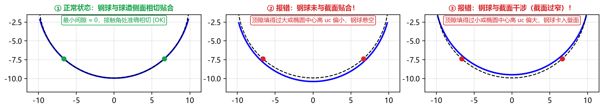

第九章：常见报警排查与故障处理速查
在使用 TrackForm 进行球道成型刀具设计的过程中，如果输入的参数存在几何矛盾、数值越界或干涉超差风险，软件会通过弹窗报错或计算结果面板红字警告第一时间提醒您。
本章汇总了全部常见报错信息、触发原因及一步到位的解决办法，供您随时查阅排障。
一、点击“计算”时的弹窗报错排查表（输入合法性拦截）
当您点击 ▶ 计算 (F5) 时，若直接弹出错误提示对话框，请对照下表修改左侧对应的输入框：
| 弹窗报错提示内容 | 触发原因 | 解决办法 |
|---|---|---|
钢球直径必须大于 0 |
钢球直径 Dw 输入了 的数值或非法字符。 |
输入正数（常见万向节钢球直径为 12.7 ~ 30.0 mm）。 |
节圆直径 PCD 必须大于钢球直径 |
节圆直径 PCD 钢球直径 Dw，在几何上无法排布球道。 |
核对图纸节圆直径 PCD（通常约为钢球直径的 倍）。 |
外球面直径必须大于 0 |
基本参数 外球面直径 输入了 的值。 |
填入星形套外球面直径（如 61.113 mm）。 |
内孔直径必须小于外球面直径 |
高级参数 内孔直径 或 外球面直径。 |
填入真实中心内孔直径（如 26.907 mm），不关心时可填 0。 |
工件宽度必须大于 0 / 球心至端面距离必须在 (0, 工件宽度) 范围内 |
工件宽度 W ，或 球心至端面 H / ，导致外球面球心跑到了星形套两端面之外。 |
核对图纸上工件总宽 与外球面球心到基准端面的距离 （对称零件 ）。 |
接触角必须在 10° ~ 75° 之间 |
接触角 α 超出了合理范围 10° ~ 75°。 |
填入正确的球道接触角（通常为 30° ~ 48°）。 |
双圆弧半径 R 必须大于钢球半径 (X.XXXX) |
在 双圆弧 + 给定半径 R 模式下，输入的 圆弧半径 R （圆弧比钢球还小，钢球放不进去）。 |
核对图纸上的双圆弧半径 ，确保 （如 AC10000 钢球半径 9.875，圆弧半径 10.24）。 |
相似度 k 必须大于 0.9 / 双圆弧截面要求相似度 k > 1.0 |
在 给定相似度 模式下，相似度 k 过小。 |
将 相似度 k 设为 的值（典型范围 1.02 ~ 1.08，常用 1.04）。 |
顶隙必须大于 0 |
在 给定顶隙 或 点表(CSV) 模式下，顶隙 c 。 |
填入正数顶隙（典型范围 0.010 ~ 0.090 mm）。 |
椭圆半轴 a、b 必须大于钢球半径 (X.XXXX) |
在 椭圆 + 给定半轴 模式下，输入的 或 。 |
检查图纸半轴数值，确保 。 |
切入角 β 必须在 15° ~ 75° 之间 |
切入角 β 超出 15° ~ 75°。 |
填入合理的刀具安装切入角（常用 25° ~ 45°，默认 36°）。 |
顶隙上限必须大于下限 / 接触角上限必须大于下限 / 接触角跨距上限必须大于下限 |
在【高级参数 → 校验范围】中，上限填得小于或等于下限。 | 确保上限 下限；若接触角或接触角跨距不需要校验，将下限和上限都填 0。 |
二、点表 (CSV) / 给定半轴模式下“钢球与截面不匹配”或“点表曲率波动”详解
当 截面类型 选择 点表(CSV) 或 定义方式 选择 给定半轴 时，软件会自动检验直径为 的钢球放入球道后是否能与两侧槽壁准确相切贴合，并检测点表自身的曲率质量：

1. 红字报警一：钢球未与截面贴合，请核对顶隙/椭圆中心！（上图 ②）
- 物理原因：您输入的
顶隙 c偏大（或椭圆中心高 uc偏小），导致钢球中心位置偏高，钢球两侧悬空，无法与槽壁接触（钢球最小间隙为较大的正值）。 - 一步解决方法：在
点表(CSV)模式下，核对图纸上规定的名义顶隙（或用图纸上的“钢球中心距球道底距离”减去钢球半径 ），填入左侧的顶隙 c输入框（在给定半轴模式下则核对中心高 uc），按F5重新计算即可。
2. 红字报警二：钢球与截面干涉（截面过窄）！（上图 ③）
- 物理原因：您输入的
顶隙 c偏小（或椭圆中心高 uc偏大），导致钢球卡入两侧槽壁内部发生干涉（钢球最小间隙为负值）。 - 一步解决方法：同样核对并调大
顶隙 c（或调小中心高 uc）即可消除干涉。
3. 红字提示三：点表在 Z = ... mm 处曲率反向或明显波动（原始点表即如此，非本软件引起）
- 物理原因：部分客户图纸附带的点表（如
AC0706-E）在球道底到接触点之间原本缺少加密点、被人工用直线段插值填补，导致原始点表坐标本身就存在曲率突变或反向凸起。由于精确包络刀具对截面曲率极其敏感，算出的精确刀具廓形在该段也会相应变形。 - 处理方法：
- 如果采用圆弧近似刀具加工（如
AC0706-E单圆弧近似偏差仅9.4 μm合格），圆弧刀具本身是光滑圆弧，不受局部点表折线波动影响，可放心使用圆弧刀具 DXF； - 如果需要磨制精确刀具，请向客户提供方核实原始生成方程（如 Table 1 常数），或适度调大
点表精度（如设为5e-5或1e-4）以增强样条光顺度。
- 如果采用圆弧近似刀具加工（如
三、计算结果面板红字报警全面排查表
当计算完成但左侧 计算结果 面板出现红字报警时（此时点击导出按钮也会弹窗拦截确认），请按以下指南快速消除：
| 计算结果红字报警内容 | 所在分块 | 根本原因与一键消除方法 |
|---|---|---|
接触角 α = ... 超出范围!顶隙 = ... 超出范围!接触角跨距 = ... 超出范围! |
■ 一（理论值） | 基本参数算出的理论截面指标超出了【高级参数 → 校验范围】设定的上下限。 消除方法：核对基本参数是否填错，或展开 ▸ 高级参数 → 校验范围 将上下限修改为当前图纸规定的范围（不需校验的接触角/跨距将上下限都填 0）。 |
廓形单调(无自交) 否!过切校验 最小间隙 = ... 过切! |
■ 二（精确刀具） | 刀具切入角过大或点表曲率异常导致刀刃回折或空间包络过切。 消除方法：减小基本参数 切入角 β（例如从 45° 降至 36°）。 |
球道底欠切 = ... 请把刀尖高度调大（至 X.XXXX 可完全消除） |
■ 三（精确刀仿真） | 高级参数 刀尖高度 低于接触段最高点，且截去过多导致钢球实际落座后的 实际顶隙 低于图纸 顶隙下限（若实际顶隙仍在下限之上，软件会自动判为合格并显示绿字说明）。消除方法：展开 ▸ 高级参数 → 刀尖与廓形，将 刀尖高度 调大至提示值以上。 |
与设计截面偏差 = ... 超差!（以及双圆弧下的 提示：双圆弧（尖底）球道的精确刀具廓形带凸转凹拐点...） |
■ 四（圆弧近似刀具） | 单圆弧“拟合精确廓形”无法贴合双圆弧（尖底）截面的凹凸拐点，或 取整位数 设得太小。消除方法：
|
第 四 分块中 实际顶隙 / 实际接触角 / 实际接触角跨距 ... 超出范围! |
■ 四（圆弧近似刀具） | 圆弧近似刀具切出的球道在钢球实际落座后，接触角、跨距或顶隙偏离了图纸范围。 消除方法：若当前为单圆弧，可将 单圆弧求法 切换为 按审核优化（软件会自动将实际接触角/跨距/顶隙约束进图纸范围内），或将 圆弧段数 增至 2 ~ 3 段。 |
四、下游 CAD 与 Excel 使用常见问题 (FAQ)
Q1：导出的 CSV 文件用 Excel 打开为什么没有乱码，但导入某些老旧数控系统报错？
- 答：TrackForm 导出的 CSV 默认带有 UTF-8 BOM 头并包含顶部
#注释说明行，方便 Excel 直接双击阅读。如果您使用的老旧磨床数控系统只接受纯数字行，只需在 Excel 中打开该 CSV，删掉顶部以#开头的说明行和中文表头行，另存为普通 CSV 即可。
Q2：刀具点表 CSV (tool_profile_points.csv) 中的 z_球心 和 z_端面 两列有什么区别？编程时该用哪一列？
- 答：
- 第 5 列
z_球心是以虚拟钢球球心为原点z = 0（向刀尖方向为正），与软件界面Tab 1：刀具廓形的纵轴完全一致； - 第 6 列
z_端面则是以刀柄定位端面（如 HSK 法兰端面）为原点z = 0计算出的轴向距离（）。当车间在数控工具磨床、加工中心或对刀仪上以刀柄端面作为编程与测量零点时，直接使用第 6 列z_端面即可免去一切手工加减换算！
- 第 5 列
Q3：为什么当 圆弧段数 设为 2 ~ 5 段时，点击 方程常数（Table 1） 会提示不适用？
- 答：客户产品开发图纸上的 Table 1（参数方程常数 ） 在数学定义上专门描述单段圆弧刀具加工出的球道轮廓。当使用 2~5 段相切圆弧刀具时，您可以直接导出
圆弧刀具 DXF（含全部相切圆弧段的ARC图元与尺寸表）用于磨刀，并导出基本轮廓（Table 2）（多段圆弧刀具实际仿真切出的 117 点截面坐标表）用于三坐标测量机检测。